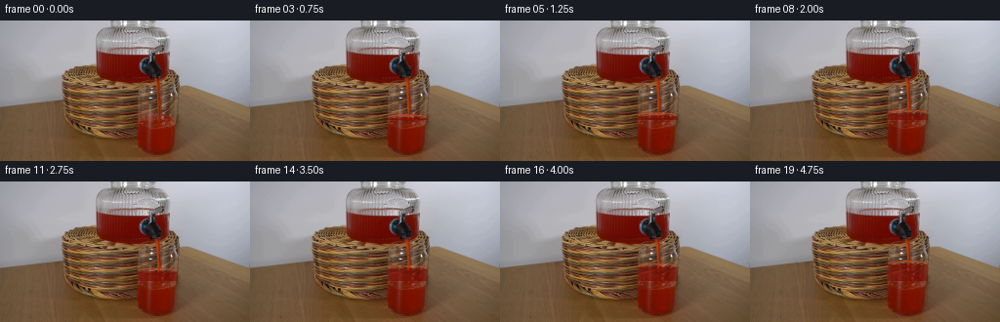
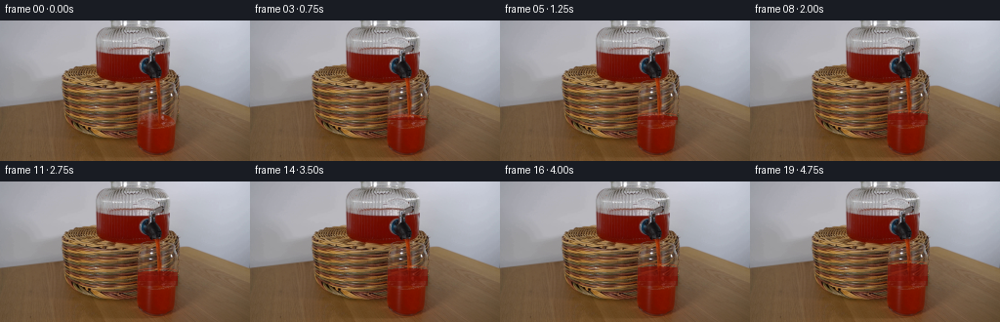
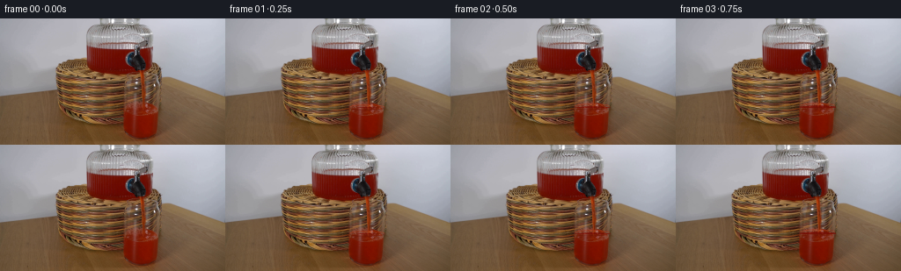
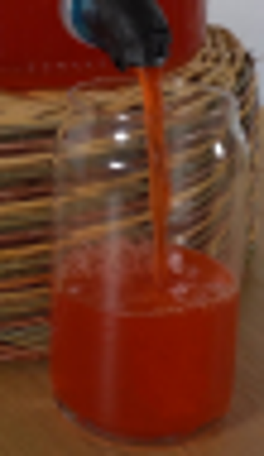
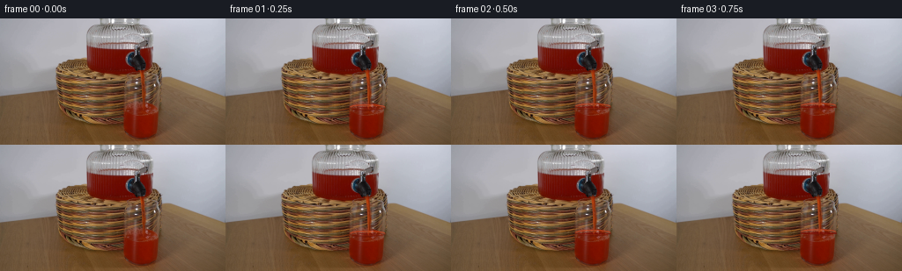
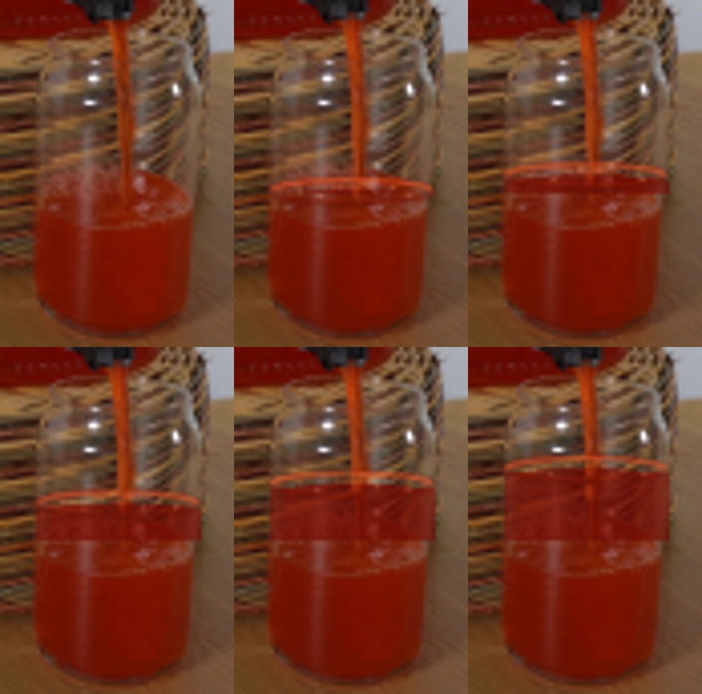
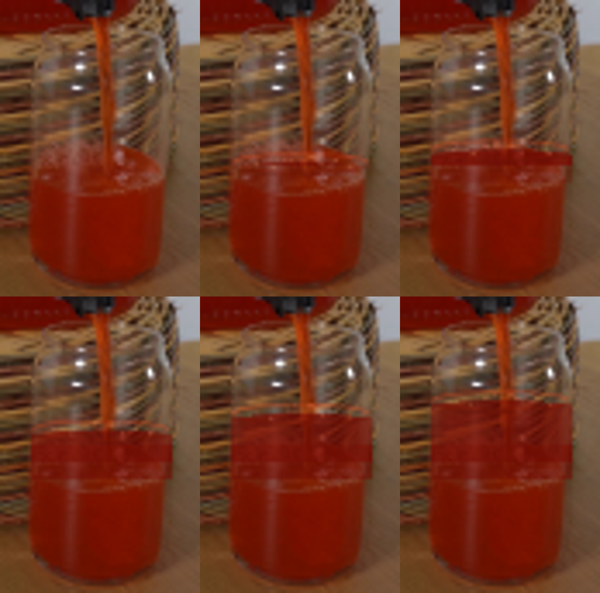

CODING AGENTS AS PIXEL WORLD MODELS
traex/GPT-5.6-Sol · 0064
点击播放 · 原生 RGB 像素
逐轮保存的候选
回放视频、检查图与代码变化。
每份候选均可单独播放。实际图片检查记录在下方工具轨迹中。
候选 01播放与检查图
点击播放 · 原生 RGB 像素

展开代码变化
--- 上一保存版本
+++ 本次保存版本
@@ -0,0 +1,165 @@
+"""Generate a locked-off, analytic animation of the red drink being poured.
+
+The photographed background is never moved. The animation is deliberately
+confined to the stream and the inside of the receiving glass, where a
+translucent, texture-preserving tint gives the rising drink a photographic
+appearance rather than covering the glass with a flat drawing.
+"""
+
+from pathlib import Path
+
+import cv2
+import numpy as np
+from PIL import Image
+
+import artifact_io
+
+
+HERE = Path(__file__).resolve().parent
+W, H = 256, 144
+SCALE = 4
+
+
+def alpha_composite(rgb, rgba):
+ """Composite a uint8 RGBA image onto a float RGB image."""
+ a = rgba[..., 3:4].astype(np.float32) / 255.0
+ return rgb * (1.0 - a) + rgba[..., :3].astype(np.float32) * a
+
+
+def liquid_body(frame, source, level, progress):
+ """Tint only the portion of the glass newly occupied by liquid."""
+ yy, xx = np.mgrid[0:H, 0:W].astype(np.float32)
+
+ # The receiving glass is almost cylindrical, with a gently tucked-in base.
+ lower_taper = np.maximum(yy - 119.0, 0.0)
+ left = 140.55 + 0.145 * lower_taper
+ right = 181.35 - 0.165 * lower_taper
+
+ # A curved boundary models the front/back projection of the liquid surface.
+ radial = np.clip((xx - 161.0) / 20.4, -1.0, 1.0)
+ boundary = level + 0.45 + 1.42 * radial * radial
+ inside = (xx >= left) & (xx <= right) & (yy >= boundary) & (yy <= 133.0)
+
+ # Do not repaint the original drink. A very slight tint where the old
+ # surface becomes submerged makes that former bright line recede naturally.
+ new_part = inside & (yy < 102.0)
+ old_part = inside & (yy >= 102.0)
+
+ src = source.astype(np.float32)
+ lum = 0.299 * src[..., 0] + 0.587 * src[..., 1] + 0.114 * src[..., 2]
+ target = np.empty_like(src)
+ target[..., 0] = 96.0 + 0.31 * lum
+ target[..., 1] = 6.0 + 0.105 * lum
+ target[..., 2] = 1.0 + 0.040 * lum
+
+ # Retain bright vertical glass reflections and the outer glass wall.
+ highlight = np.clip((lum - 125.0) / 90.0, 0.0, 0.48)
+ edge = np.clip((np.abs(xx - 161.0) - 15.8) / 4.2, 0.0, 1.0)
+ alpha = (0.78 - 0.34 * highlight - 0.20 * edge)
+ alpha *= new_part.astype(np.float32)
+ alpha += old_part.astype(np.float32) * (0.035 + 0.025 * progress)
+
+ # One-pixel soft meniscus transition (subpixel level motion remains smooth).
+ soft = np.clip(yy - boundary + 0.45, 0.0, 1.0)
+ alpha *= soft
+ frame[:] = frame * (1.0 - alpha[..., None]) + target * alpha[..., None]
+
+ # A subdued depth gradient is characteristic of a transparent red drink.
+ depth = np.clip((yy - level) / 38.0, 0.0, 1.0)
+ shade = (1.0 - 0.040 * depth[..., None] * inside[..., None])
+ frame[:] *= shade
+
+
+def fluid_overlay(level, phase):
+ """High-resolution antialiased surface, ripples, bubbles, and stream."""
+ sw, sh = W * SCALE, H * SCALE
+ lay = np.zeros((sh, sw, 4), np.uint8)
+
+ def pt(x, y):
+ return int(round(x * SCALE)), int(round(y * SCALE))
+
+ def ellipse(center, axes, angle, start, end, color, thickness):
+ cv2.ellipse(
+ lay, pt(*center), pt(*axes), angle, start, end, color,
+ max(1, int(round(thickness * SCALE))), cv2.LINE_AA
+ )
+
+ # The existing spout is fixed; only highlights within the flowing column
+ # fluctuate. Its very small lateral displacement reads as real turbulence.
+ wobble = 0.32 * np.sin(phase * 1.13) + 0.17 * np.sin(phase * 2.37 + 0.8)
+ stream = np.array([
+ pt(161.1, 58.0),
+ pt(161.6 + 0.35 * wobble, 67.0),
+ pt(162.0 + wobble, 79.0),
+ pt(162.1 - 0.45 * wobble, 91.0),
+ pt(162.0 + 0.30 * wobble, level + 1.4),
+ ], np.int32).reshape((-1, 1, 2))
+ cv2.polylines(lay, [stream], False, (179, 48, 11, 72), 3 * SCALE, cv2.LINE_AA)
+ cv2.polylines(lay, [stream], False, (232, 92, 35, 76), 1 * SCALE, cv2.LINE_AA)
+
+ # Translucent top disk and meniscus. The rear edge is brighter; the front
+ # edge is darker because it is seen through more red liquid.
+ ellipse((161.0, level + 1.25), (19.8, 2.65), 0, 0, 360,
+ (158, 34, 8, 68), 2.0)
+ ellipse((161.0, level + 1.0), (19.5, 2.45), 0, 184, 356,
+ (224, 80, 36, 145), 0.70)
+ ellipse((161.0, level + 1.45), (19.5, 2.75), 0, 8, 174,
+ (103, 16, 3, 116), 0.85)
+
+ # Repeating impact waves expand and fade away from the stream contact.
+ cyc1 = (phase / (2.0 * np.pi)) % 1.0
+ cyc2 = (cyc1 + 0.50) % 1.0
+ for cyc in (cyc1, cyc2):
+ rx = 2.3 + 9.0 * cyc
+ ry = 0.42 + 1.18 * cyc
+ a = int(118 * (1.0 - cyc) ** 1.25)
+ ellipse((162.1, level + 0.65), (rx, ry), 0, 188, 353,
+ (239, 112, 60, a), 0.58)
+
+ # Tiny impact crown and moving glints/foam. They remain subtle at native size.
+ crown = 0.45 + 0.35 * np.sin(phase * 1.7)
+ for dx, dy, alpha in [(-2.2, -0.5, 110), (1.9, -0.2, 125), (3.7, 0.5, 82)]:
+ ellipse((162.0 + dx, level + dy - crown), (0.48, 0.30), 0, 0, 360,
+ (246, 133, 78, alpha), 0.50)
+
+ # Bubble positions are deterministic, with a tiny phase drift along the top.
+ bubbles = [(-13.0, 1.0, .55), (-8.2, 2.1, .38), (-4.4, .5, .48),
+ (6.4, 1.7, .42), (10.8, .4, .34), (14.1, 2.0, .48)]
+ for k, (dx, dy, r) in enumerate(bubbles):
+ bx = 161.0 + dx + 0.35 * np.sin(phase * (0.8 + .07 * k) + k)
+ ba = int(55 + 35 * (0.5 + 0.5 * np.sin(phase + k * 1.7)))
+ ellipse((bx, level + dy), (r, r * .65), 0, 0, 360,
+ (250, 151, 103, ba), 0.42)
+
+ # Area resampling supplies clean subpixel antialiasing at 256x144.
+ return cv2.resize(lay, (W, H), interpolation=cv2.INTER_AREA)
+
+
+def generate():
+ source = np.asarray(Image.open(HERE / "first_frame.png").convert("RGB"), dtype=np.uint8)
+ assert source.shape == (H, W, 3)
+ frames = []
+
+ for index in range(20):
+ if index == 0:
+ frames.append(source.copy())
+ continue
+
+ progress = index / 19.0
+ # Constant inflow into a straight-sided glass produces a linear rise.
+ level = 101.0 - 18.0 * progress
+ phase = index * 1.31
+ frame = source.astype(np.float32).copy()
+ liquid_body(frame, source, level, progress)
+ frame = alpha_composite(frame, fluid_overlay(level, phase))
+ frames.append(np.clip(frame + 0.5, 0, 255).astype(np.uint8))
+
+ result = np.stack(frames, axis=0)
+ # Contract-critical invariants, especially the untouched supplied first frame.
+ assert result.shape == (20, 144, 256, 3) and result.dtype == np.uint8
+ assert np.array_equal(result[0], source)
+ artifact_io.save(result, HERE)
+
+
+if __name__ == "__main__":
+ generate()
候选 02播放与检查图
点击播放 · 原生 RGB 像素


展开代码变化
--- 上一保存版本
+++ 本次保存版本
@@ -57,7 +57,15 @@
edge = np.clip((np.abs(xx - 161.0) - 15.8) / 4.2, 0.0, 1.0)
alpha = (0.78 - 0.34 * highlight - 0.20 * edge)
alpha *= new_part.astype(np.float32)
- alpha += old_part.astype(np.float32) * (0.035 + 0.025 * progress)
+ alpha += old_part.astype(np.float32) * (0.025 + 0.018 * progress)
+
+ # Foam and glints belonging to the *former* free surface are gradually
+ # absorbed once they sit several pixels under the new surface. Restricting
+ # this to a narrow band preserves the genuine photographed liquid below.
+ former_surface = inside & (yy >= 97.0) & (yy <= 106.0)
+ submerged = np.clip((99.5 - level) / 7.0, 0.0, 1.0)
+ alpha += former_surface.astype(np.float32) * (0.52 * submerged)
+ alpha = np.clip(alpha, 0.0, 0.86)
# One-pixel soft meniscus transition (subpixel level motion remains smooth).
soft = np.clip(yy - boundary + 0.45, 0.0, 1.0)
@@ -94,17 +102,17 @@
pt(162.1 - 0.45 * wobble, 91.0),
pt(162.0 + 0.30 * wobble, level + 1.4),
], np.int32).reshape((-1, 1, 2))
- cv2.polylines(lay, [stream], False, (179, 48, 11, 72), 3 * SCALE, cv2.LINE_AA)
- cv2.polylines(lay, [stream], False, (232, 92, 35, 76), 1 * SCALE, cv2.LINE_AA)
+ cv2.polylines(lay, [stream], False, (167, 43, 9, 38), 3 * SCALE, cv2.LINE_AA)
+ cv2.polylines(lay, [stream], False, (225, 85, 29, 46), 1 * SCALE, cv2.LINE_AA)
# Translucent top disk and meniscus. The rear edge is brighter; the front
# edge is darker because it is seen through more red liquid.
ellipse((161.0, level + 1.25), (19.8, 2.65), 0, 0, 360,
- (158, 34, 8, 68), 2.0)
+ (143, 29, 6, 38), 1.15)
ellipse((161.0, level + 1.0), (19.5, 2.45), 0, 184, 356,
- (224, 80, 36, 145), 0.70)
+ (218, 76, 32, 102), 0.52)
ellipse((161.0, level + 1.45), (19.5, 2.75), 0, 8, 174,
- (103, 16, 3, 116), 0.85)
+ (96, 14, 2, 83), 0.58)
# Repeating impact waves expand and fade away from the stream contact.
cyc1 = (phase / (2.0 * np.pi)) % 1.0
@@ -112,7 +120,7 @@
for cyc in (cyc1, cyc2):
rx = 2.3 + 9.0 * cyc
ry = 0.42 + 1.18 * cyc
- a = int(118 * (1.0 - cyc) ** 1.25)
+ a = int(86 * (1.0 - cyc) ** 1.25)
ellipse((162.1, level + 0.65), (rx, ry), 0, 188, 353,
(239, 112, 60, a), 0.58)
可观测工具轨迹
实际执行的命令与返回图片。
命令 1exit 0
/bin/bash -lc "cat prompt.txt && printf '\\n--- GENERATION_RULES ---\\n' && cat GENERATION_RULES.md"
命令 2exit 1
/bin/bash -lc "find . -maxdepth 2 -type f -printf '%p\\n' | sort && printf '\\n--- tools ---\\n' && command -v ffmpeg && command -v python3 && python3 - <<'PY' mods=['cv2','PIL','numpy','scipy','imageio'] for m in mods: try: x=__import__(m); print(m,'OK',getattr(x,'__version__','')) except Exception as e: print(m,'NO',e) PY"
命令 3exit 0
/bin/bash -lc 'file first_frame.png && identify first_frame.png 2>/dev/null || true'
命令 4exit 0
/bin/bash -lc 'cat artifact_io.py'
命令 5exit 0
/bin/bash -lc "for x in ffmpeg ffprobe python3 convert identify; do printf '%s: ' \""'$x"; command -v "$x" || true; done
python3 - <<'"'PY'
mods=['cv2','PIL','numpy','scipy','imageio','skimage']
for m in mods:
try:
x=__import__(m); print(m,'OK',getattr(x,'__version__',''))
except Exception as e: print(m,'NO',repr(e))
from PIL import Image
im=Image.open('first_frame.png'); print(im.mode, im.size)
PY"命令 6exit 0
/bin/bash -lc "python3 - <<'PY'
from PIL import Image
im=Image.open('first_frame.png')
im.crop((130,45,185,140)).resize((440,760)).save('.tmp/crop.png')
PY"命令 7exit 0
/bin/bash -lc "python3 - <<'PY'
from PIL import Image,ImageDraw,ImageFont
im=Image.open('first_frame.png').convert('RGB')
a=im.load()
# coords enlarged nearest with grid every 5 pixels
crop=im.crop((130,55,190,140)).resize((600,850))
d=ImageDraw.Draw(crop)
for x in range(0,601,50): d.line((x,0,x,850),fill=(0,255,0),width=1)
for y in range(0,851,50): d.line((0,y,600,y),fill=(0,255,0),width=1)
for x in range(0,60,5): d.text((x*10+2,2),str(x+130),fill='yellow')
for y in range(0,85,5): d.text((2,y*10+2),str(y+55),fill='yellow')
crop.save('.tmp/grid.png')
for y in [68,72,76,80,84,88,92,96,100,104,108,112,120,128,134]:
print('y',y, [(x,a[x,y]) for x in range(138,184,4)])
PY"命令 8exit 0
/bin/bash -lc "python3 generate.py && python3 - <<'PY'
from PIL import Image
import numpy as np
x=np.asarray(Image.open('first_frame.png').convert('RGB'))
y=np.asarray(Image.open('frames/00.png').convert('RGB'))
print('frame00 identical:', np.array_equal(x,y), 'maxdiff',np.abs(x.astype(int)-y.astype(int)).max())
z=np.load('pixels.npz')['pixels']
print('pixels tensor',z.shape,z.dtype)
for i in range(20):
a=np.asarray(Image.open(f'frames/{i:02}.png'))
n=np.count_nonzero(np.any(a "'!= x,axis=2))
print(i,n,a[83:104,140:183].mean(axis=(0,1)).round(1))
PY'命令 9exit 0
/bin/bash -lc 'python3 -m py_compile generate.py artifact_io.py && du -h pixels.npz index.html inspection.png && find frames -type f | wc -l && git status --short 2>/dev/null || true'
命令 10exit 0
/bin/bash -lc "python3 - <<'PY'
from PIL import Image
for i in [0,1,5,10,15,19]:
Image.open(f'frames/{i:02}.png').crop((132,54,190,140)).resize((464,688)).save(f'.tmp/crop_{i:02}.png')
# six-up close-up sheet
out=Image.new('RGB',(464*3,688*2),(0,0,0))
for j,i in enumerate([0,1,5,10,15,19]): out.paste(Image.open(f'.tmp/crop_{i:02}.png'),((j%3)*464,(j//3)*688))
out.save('.tmp/closeups.png')
PY"命令 11exit 0
/bin/bash -lc "python3 generate.py && python3 - <<'PY'
from PIL import Image
import numpy as np
src=np.asarray(Image.open('first_frame.png'))
f0=np.asarray(Image.open('frames/00.png'))
print('first exact',np.array_equal(src,f0))
for i in [0,1,5,10,15,19]:
Image.open(f'frames/{i:02}.png').crop((132,54,190,140)).resize((464,688)).save(f'.tmp/crop_{i:02}.png')
out=Image.new('RGB',(1392,1376))
for j,i in enumerate([0,1,5,10,15,19]): out.paste(Image.open(f'.tmp/crop_{i:02}.png'),((j%3)*464,(j//3)*688))
out.save('.tmp/closeups2.png')
PY"视觉工具实际返回图片 1

视觉工具实际返回图片 2

视觉工具实际返回图片 3

视觉工具实际返回图片 4

视觉工具实际返回图片 5

视觉工具实际返回图片 6

保存候选 2 份；完成命令 11 次；可验证图片返回 6 张。原始 API 响应与完整日志保留在本地。